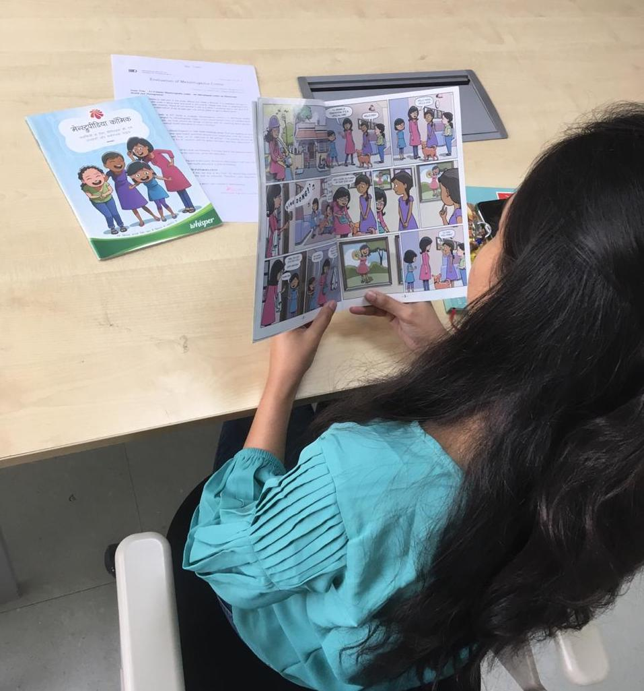

Research
I have investigated the design of health tools and health data use from three perspectives: (i) human-centered AI for and personal data use in planning, tracking, reflecting, and acting around personal health; (ii) integration of patient-generated data for clinical care and collaboration; and (iii) inclusive and community-centered design for sensitive health and wellbeing contexts.
Human-Centered AI and Personal Data Use for Health

Generative AI for Planning, Tracking, Reflecting, and Acting around Personal Health Data
With recent generative AI (GAI) advancements, researchers have identified opportunities for and demonstrated the potential of GAI-based health agents to support reflection, motivate behavior change, and personalize recommendations for actions. Complementing such fine-tuned tools, I investigated the potential for GAI to support people in navigating complexities introduced by heterogeneous tracking data, goals, expertise, and context throughout the multiple stages of personal health informatics. Opportunities and considerations I identified — e.g., for deeper AI integration with personal data libraries, for helping people craft effective prompts toward self-tracking support, for translating query sessions into effective action — are an important prerequisite for development and longitudinal examination of GAI tools that support individuals across or within specific stages of planning, tracking, reflecting, and acting on personal health data, and help establish my long-term agenda in human-centered AI for personal health.

Bayesian Analysis of Self-Tracked Health Data
People self-track for health, often to answer questions using their data. However, heterogeneity in tracking goals, data, and questions makes it challenging to support effective integration and reflection. Extending theoretical considerations around Bayesian modeling of trigger and symptom relationships in self-tracked health data, we empirically investigated self-tracker experiences using Bayesian analysis to examine their real-world data around a range of questions. We interviewed and observed 8 participants reflect on self-tracked data using a technology probe that applied Bayesian analysis, and identified considerations for designing Bayesian analysis to support exploration and reflection on relationships across a range of health goals, data, and questions. This work is currently under review.
Integration of Patient-Generated Data for Clinical Care and Collaboration

Cohort Study of Long-COVID Patients & Data Needs to Support Clinical Decisions
Covid long haul (CLH) is an emerging chronic illness with drastically differing experiences that necessitate personalized care. Because patients interact with different clinicians during diagnosis of and ongoing medical treatment for CLH symptoms, ensuring interoperability and clinical relevance of different data is key to supporting personalized care recommendations. Collaborating with the Parkview Post-COVID Clinic, I conducted clinically-embedded and longitudinal research to develop a holistic understanding of CLH using multimodal patient-generated data (wearable tracking data, weekly surveys, EHR, patient interviews) and to inform designs supporting clinical care workflows — including clinical dashboards and holistic patient profiles integrating patient-reported and self-tracked data. My designs remain a part of and continue to have a sustained impact in Parkview's health ecosystem.
Implementing Goal-Directed Self-Tracking for Migraine Management
Self-tracking and personal informatics offer important potential in chronic condition management, but such potential is often undermined by difficulty in aligning self-tracking tools to an individual's goals. I contributed to research on goal-directed self-tracking of migraine, conducting a longitudinal examination of patient-clinician collaboration to set up, evolve, and align self-tracking plans with patient migraine management goals through a 12+ month deployment study.
Inclusive and Community-Centered Design for Sensitive Health and Wellbeing Contexts
Self-Tracking and Sense-Making for Gendered Health and Socially-Informed Bodily Experiences

Designing to Record and Share Experiences of Menopause Across Generations
Menopause is often overlooked or medicalized, devaluing individual experiences and failing to support individuals experiencing this life event. Family dynamics, death, and taboo mean that individuals often miss out on information that could help them contextualize their experiences. We conducted interviews and co-design sessions with people who have experienced or are currently experiencing menopause to investigate social and familial aspects of menopause and design in support of intergenerational sharing of menopause experiences.

Designing for Tracking & Managing PCOS
Polycystic Ovary Syndrome (PCOS) is a condition that causes hormonal imbalance and infertility in women and people with female reproductive organs. PCOS causes different symptoms for different people, with no singular or universal cure. Being a stigmatized and enigmatic condition, it is challenging to discover, diagnose, and manage PCOS. Our work aims to inform the design of inclusive health technologies through an understanding of people's lived experiences and challenges with PCOS. We conducted interviews with people diagnosed with PCOS and qualitatively analyzed a PCOS-specific subreddit forum. We reported people's support-seeking, sense-making, and self-experimentation practices, and found uncertainty and stigma to be key in shaping their experiences. We identified avenues for designing technology to support diverse needs such as personalized and contextual tracking, accelerated self-discovery, and co-management.
Designing Digital and AI-Enabled Health Tools with Communities

Community-Informed Considerations for Advancing Equity in AI-Enabled Mobile Health Tools
Hispanic and Latino communities in the U.S. bear a disproportionate burden of chronic conditions (e.g., asthma), with access barriers and structural injustices having historically excluded them from medical research and health technology design. Our team developed a case scenario storyboard depicting use of AI-enabled health tools for pediatric asthma and conducted focus groups to uncover community perspectives on preferences, benefits, barriers, and concerns. Participants discussed usability, individualized support, affordability, prediction accuracy, overreliance, data sharing, and privacy. I further translated project-specific insights into a translational resource for supporting designers in engaging communities to create inclusive and culturally-responsive health technologies — contributing methodological guidance for community-based, human-centered approaches to health technology design and evaluation.

A Human Rights-Based Approach for Designing for & with People with Dementia
User-centered design is typically framed around meeting the preferences and needs of populations involved in the design process. However, when designing technology for people with disabilities — in particular dementia — there is also a moral imperative to ensure their human rights are consciously integrated into the process and included in the product. Our work introduced a human rights-based user-centered design process informed by the United Nations Convention on the Rights of Persons with Disabilities (CRPD). We conducted design workshops with undergraduate students and dementia advocates to design technology for people with dementia, actively involving people with dementia throughout the design process.

Gendered Experience of Accessing Safe Spaces for Menstruation in India
Daily management of menstrual hygiene becomes challenging in cultural contexts where menstruation is stigmatized. Our research identifies and examines such challenges faced during menstruation in the urban environs of Delhi, India. We used participatory design activities, interviews, and a survey to investigate how participants deal with their periods on the go, and examined participants' conceptualizations of "safe spaces" where they could deal with their period on their own terms. We discuss how menstrual mobilities are being or can be supported through technology-based interventions.

Examining Platforms for Menstrual Health Education in India
Menstruation is a conversational taboo in India, restricting the effective delivery of Menstrual Health Education. Menstrupedia, a digital platform designed for an Indian audience, aims to bridge this information gap via its website and comic. We use qualitative research methods and engage with a Feminist HCI lens to analyze Menstrupedia's affordances and shortcomings, and provide recommendations for designing culturally-responsive technology for educating about sensitive health topics such as menstruation.